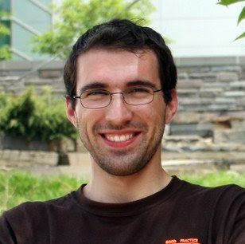

Associate Professor
Canada Research Chair in
Computer Graphics
Computer Graphics
CV/Résumé (updated 2018-10-13)
Teaching
Spring 2026
CMPT722: Rendering & Visual Computing for AI
Spring 2025
CMPT722: Rendering & Visual Computing for AI
Spring 2024
CMPT722: Rendering & Visual Computing for AI
CMPT757: Frontiers of Visual Computing
Spring 2023
CMPT700: Technical Writing & Research Comm.
Fall 2022
CMPT985: Rendering & Visual Computing for AI
Spring 2022
CMPT700: Technical Writing & Research Comm.
CMPT361: Intro to Visual Computing
Fall 2021
CMPT361: Intro to Visual Computing
Spring 2021
CMPT700: Technical Writing & Research Comm.
Fall 2019 & Fall 2020
CMPT757: Frontiers of Visual Computing
Summer 2015 (Stanford)
CS148: Intro to Comp. Graphics & Imaging
Students & Visitors
Dongchen Yang
Hou In (Derek) Pun
Hou In (Ivan) Tam
Jiayi Liu (co-advised with Ali Mahdavi-Amiri)
Reza Asad (co-advised with Sharan Vaswani)
Weikun Peng
Alumni
Armin Kavian (next: CC&L)
Changan Chen (next: PhD at UT Austin)
Jiaqi Tan (next: PhD at SFU)
Madhawa Vidanapathirana (next: Microsoft)
Sanjay Haresh (next: Qualcomm AI)
Shivansh Patel (next: PhD at UIUC)
Supriya Gadi Patil
Yongsen Mao (next: KuJiaLe AI)
News
Nov 2025
Two 3DV 2026 papers and two WACV 2026 papers. Congratulations to Weikun, Derek, Ivan, Austin, Denys and Yiming! Also, congratulations to Derek for defending his MSc thesis.
Mar 2025
One paper at ICLR 2025, one at 3DV 2025 (oral), and one Eurographics 2025 STAR. Congratulations to Jiayi, Denys, Ivan, Derek, and Austin! Also, congratulations to Ivan for defending his MSc thesis and starting as a PhD student in the group.
May 2024
Tenured and promoted to Associate Professor! I am grateful for all the support by my students, colleagues, and collaborators.
Mar 2024
Three papers at CVPR 2024, two at 3DV 2024, one at WACV 2024, and one Eurographics 2024 STAR.
Congratulations to Jiayi, Ivan, Mukul, Yongsen, Sanjay, Qirui, Xiahao, Hanxiao, Han-Hung, and Sonia!
Congratulations to Jiayi, Ivan, Mukul, Yongsen, Sanjay, Qirui, Xiahao, Hanxiao, Han-Hung, and Sonia!
Jul 2023
New paper on articulated object reconstruction at ICCV 2023. Congratulations to Jiayi!
May 2023
Congratulations to Sanjay and Supriya for defending their MSc theses.
"Emergence of Maps in the Memories of Blind Navigation Agents" receives ICLR 2023 Outstanding Paper Award.
"Emergence of Maps in the Memories of Blind Navigation Agents" receives ICLR 2023 Outstanding Paper Award.
May 2022
I am honored to receive a CHCCS Early Career Researcher Award.
Jan 2022
Congratulations to Jiaqi for defending her MSc thesis!
Oct 2021
Habitat 2.0 to be presented at NeurIPS 2021 as a spotlight! Check out the project at aihabitat.org.
July 2021
Congratulations to Madhawa for defending his MSc thesis!
Paper on communication between embodied AI agents accepted to ICCV 2021. Congratulations to Shivansh, Saim, and Unnat!
Paper on communication between embodied AI agents accepted to ICCV 2021. Congratulations to Shivansh, Saim, and Unnat!
May 2021
Helping to organize three workshops at CVPR 2021: ScanNet Indoor Scene Understanding Challenge, Multi-Object Navigation Challenge at the Embodied AI Workshop, Learning to Generate 3D Shapes and Scenes.
Mar 2021
Three papers accepted to CVPR 2021. Congratulations to Madhawa, Qirui, Jiaqi, and Lewis.
Jan 2021
Large Batch Simulation for Deep Reinforcement Learning accepted to ICLR 2021.
Dec 2020
Honored to be appointed as Canada Research Chair (CRC) in Computer Graphics.
Serving as co-program chair for Graphics Interface 2021.
Oct 2020
One paper accepted at NeurIPS 2020 and one paper at 3DV 2020.
Jul 2020
Keynote talk on 3D graphics system challenges for simulation at High-performance Graphics 2020.
ScanNet receives the SGP 2020 dataset award.
Two papers accepted at IROS 2020.
Jun 2020
Co-organizing three workshops at CVPR 2020: Learning 3D Generative Models, Embodied AI Workshop, ScanNet Indoor Scene Understanding Challenge.
Apr 2020
DD-PPO paper accepted at ICLR 2020.
Nov 2019
AI Habitat nominated for best paper award at ICCV 2019.
Mar 2019
Co-organizing three workshops at CVPR 2019: Habitat Challenge, 3D Scene Generation, and ScanNet Indoor Scene Understanding.
Mar 2019
Two papers accepted to CVPR 2019 and one paper at SIGGRAPH 2019.
Feb 2019
Released the AI Habitat platform.
Jan 2019
Started at SFU!
Jul 2018
Joined FAIR Menlo Park as a visiting researcher.
May 2018
Co-organizing ECCV 2018 workshop on Visual Learning and Embodied Agents in Simulation Environments.
Mar 2018
New paper on deep convolutional scene synthesis accepted to SIGGRAPH 2018.
Feb 2018
State of the art report accepted to Eurographics 2018 + one paper accepted to CVPR 2018.
Sep 2017
Two papers accepted to 3DV 2017.
Jul 2017
I was an instructor at the Shenzhen University VCC 2017 Summer School.
Mar 2017
Three papers accepted to CVPR 2017.
Dec 2016
Co-organized the 'Directions in Shape Analysis towards Functionality' course at SIGGRAPH Asia 2016.
Sep 2016
Graduated from Stanford and moved to Princeton.